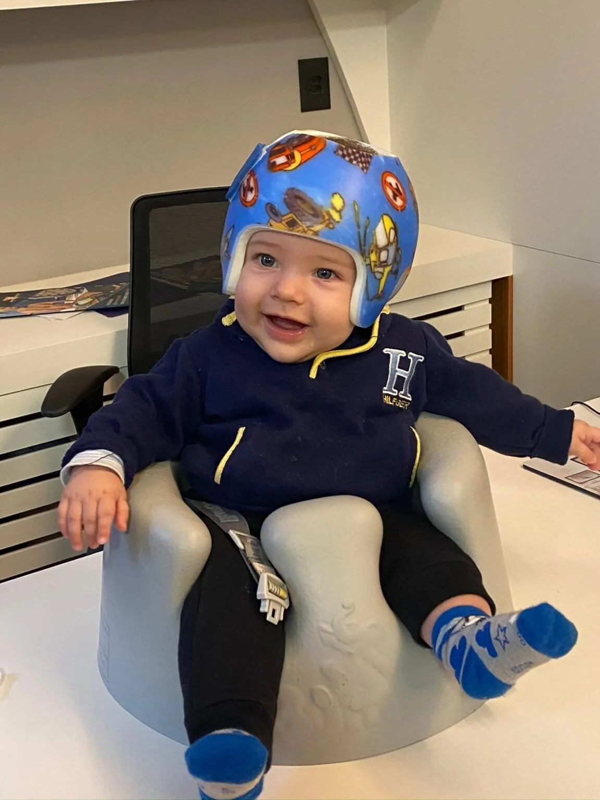
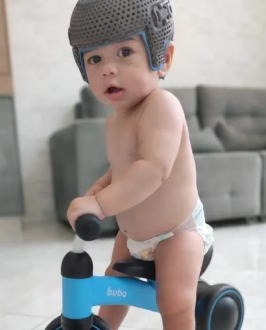
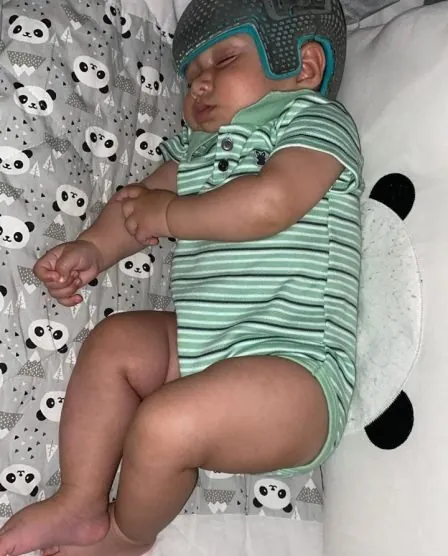
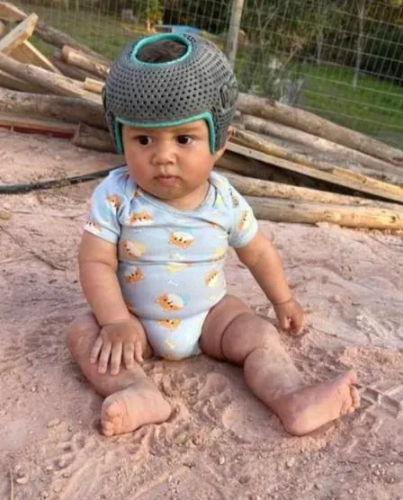

Plagiocefalia
Achatamento de um lado da cabeça, com a orelha desse lado mais à frente.
Entender a plagiocefalia
A Clínica Baby Helmet é uma clínica de assimetria craniana no Belvedere, em Belo Horizonte, conduzida pela pediatra Dra. Bruna Fabri, referência no tema. A avaliação com escaneamento 3D mostra o formato da cabeça do bebê e orienta o melhor caminho para cada caso.

Perceber a cabeça achatada é o primeiro passo para cuidar. Na Clínica Baby Helmet, a assimetria craniana é medida com escaneamento 3D e cada família sai da consulta com um plano claro: orientação de posicionamento, fisioterapia ou órtese craniana sob medida, de acordo com o grau e a idade do bebê.
Fundada em 2021 pela pediatra Dra. Bruna Fabri, a clínica tem a assimetria craniana como foco e acompanha cada bebê de perto, do primeiro contato até a alta.
Nosso compromisso: avaliar com cuidado, explicar com clareza e acompanhar cada bebê até a alta.
A Dra. Bruna Fabri, médica pediatra com CRM-MG 64780 e RQE 40956, é referência em assimetria craniana: vice-presidente da sociedade brasileira da área, organizadora do primeiro congresso nacional sobre o tema e fundadora da Clínica Baby Helmet, onde acompanha pessoalmente cada caso.
Visto de cima, o formato da cabeça mostra o tipo de assimetria craniana. Em destaque, a região que costuma ficar achatada.
Achatamento de um lado da cabeça, com a orelha desse lado mais à frente.
Entender a plagiocefaliaNuca achatada por igual, com a cabeça mais larga e mais curta.
Entender a braquicefaliaCabeça comprida e estreita, mais comum em bebês prematuros.
Entender a escafocefaliaO bebê vira sempre para o mesmo lado e apoia sempre a mesma região.
Entender o torcicolo congênitoQuando o achatamento é esperado e quando vale fazer a avaliação.
Ver quando a cabeça achatada pede avaliaçãoVeja se o formato da cabeça do seu bebê pede uma avaliação.
Fazer o teste da cabeça do bebêO tratamento na Clínica Baby Helmet tem quatro etapas, todas com a Dra. Bruna Fabri acompanhando de perto.
Você agenda pelo WhatsApp e conta a idade do bebê e o que percebeu na cabeça dele.
Consulta com a médica e escaneamento 3D da cabeça, rápido e seguro, para medir o tipo e o grau.
Com as medidas em mãos, o caminho é definido junto com a família: posicionamento, fisioterapia ou órtese.
Retornos, ajustes e novas medidas até a alta, com laudo para o plano de saúde.
Médica à frente, decisões com medidas e cuidado até a alta: é assim que a Clínica Baby Helmet cuida da assimetria craniana.
A Dra. Bruna Fabri avalia o bebê por inteiro e faz o diagnóstico completo do formato da cabeça.
O CVAI e o índice cefálico mostram o grau e orientam o melhor caminho para cada bebê.
A cabeça do bebê é medida em poucos minutos, de forma confortável, e a evolução aparece nos retornos.
Feita sob medida a partir do escaneamento, a órtese é leve, arejada e hipoalergênica.
A família recebe as medidas e a justificativa da indicação para pedir cobertura ou reembolso.
Retornos, ajustes e acolhimento da família em cada etapa, do primeiro contato até o fim do uso.
Cada grau de assimetria craniana tem o seu caminho. Nos casos leves, o posicionamento e o tempo de bruços costumam trazer bons resultados; nos moderados e acentuados, a órtese craniana sob medida conduz a correção quando usada na idade certa.
| Grau | Medida no escaneamento | Como costuma aparecer | Caminho mais comum |
|---|---|---|---|
| Leve | [PREENCHER: faixa de CVAI usada pela Dra. Bruna] | Diferença discreta, percebida ao olhar a cabeça de cima. | Orientação de posicionamento, tempo de bruços e acompanhamento da medida. |
| Moderado | [PREENCHER: faixa de CVAI] | Diferença visível, às vezes com uma orelha um pouco à frente. | Posicionamento e fisioterapia, com a órtese craniana como reforço quando a medida pede. |
| Acentuado | [PREENCHER: faixa de CVAI] | Assimetria evidente, que também pode envolver a posição de orelhas e testa. | A órtese craniana costuma ser o caminho indicado, idealmente a partir dos 4 meses. |
Tabela educativa. A conduta de cada bebê é definida na consulta, com as medidas do escaneamento e a idade. [VALIDAR: revisão da Dra. Bruna Fabri] Ver como definimos o melhor caminho para cada bebê
A Clínica Baby Helmet fica no Belvedere, em Belo Horizonte, e recebe bebês de toda a região, do interior de Minas e de outros estados.
Consulta, escaneamento e retornos no Belvedere, de segunda a sexta, das 8h às 18h.
Famílias de todo o estado vêm para a avaliação e combinam os retornos com a equipe.
A clínica já atendeu bebês de outros estados e de países vizinhos. Veja como planejar a vinda.
Trechos de avaliações públicas da Clínica Baby Helmet no Google, sem edição.
A equipe é atenciosa, acolhedora e explica todo o processo com muita clareza.
Dra Bruna é muito atenciosa e a clínica muito bem estruturada.
Meu bebê venceu a assimetria craniana e a Dra Bruna foi essencial nesse processo!
Observe a cabeça do bebê de cima, de preferência no banho, com o cabelo molhado. Um lado mais plano, a nuca larga e reta, uma orelha um pouco à frente ou o bebê que prefere virar sempre para o mesmo lado são bons motivos para uma avaliação. Na Clínica Baby Helmet, a Dra. Bruna Fabri confirma o tipo e o grau com o escaneamento 3D.
Sim. A órtese craniana é indolor, feita sob medida a partir do escaneamento 3D da cabeça do bebê, leve, ventilada e hipoalergênica. Ela orienta o crescimento: dá apoio nas regiões que já cresceram e deixa espaço onde a cabeça precisa crescer. Os primeiros dias são de adaptação, e a equipe da Clínica Baby Helmet acompanha cada ajuste.
A órtese craniana pode ser usada dos 4 meses a 1 ano e 2 meses de vida. Quanto mais cedo o tratamento começa, mais maleável é o crânio e mais rápido costuma ser o resultado. Por isso a avaliação vale a pena assim que a família percebe a diferença no formato da cabeça do bebê.
Geralmente de 3 a 6 meses. O tempo depende do grau da assimetria e da idade do bebê no início do tratamento. Na Clínica Baby Helmet, a Dra. Bruna Fabri define o plano depois da avaliação e acompanha a evolução com novas medidas nos retornos, até a alta.
A órtese craniana é usada 23 horas por dia e sai apenas na hora do banho e da higiene da própria órtese. Por ser leve e ventilada, depois do período de adaptação o bebê dorme, brinca e mama com ela normalmente.
Começa com a consulta com a Dra. Bruna Fabri e o escaneamento 3D, que define o tipo e o grau da assimetria. Com as medidas, o plano é montado junto com a família e pode incluir orientação de posicionamento, fisioterapia ou órtese craniana. Os pais acompanham cada etapa, do primeiro contato até a alta.
Sim. A Dra. Bruna Fabri, médica pediatra com CRM-MG 64780 e RQE 40956, está envolvida diretamente em cada caso da Clínica Baby Helmet: faz a avaliação, explica a conduta para a família e acompanha os retornos e as novas medidas até a alta do tratamento.
A cobertura varia entre os planos de saúde, por isso vale consultar o seu. A Clínica Baby Helmet prepara laudos completos, com as medidas do escaneamento e a justificativa da indicação, para a família pedir a cobertura ou o reembolso. A página de valor e plano de saúde explica os documentos.
A órtese craniana é higienizada uma vez ao dia com álcool 70% em um pano úmido, aproveitando o momento do banho do bebê. É uma rotina rápida, e a equipe da Clínica Baby Helmet orienta a família sobre esse cuidado desde o início do uso.
A decisão é tomada com medidas. O escaneamento 3D mostra o grau da assimetria, e a Dra. Bruna Fabri considera também a idade e a evolução do bebê. A família recebe os números e o laudo, e os critérios da Clínica Baby Helmet estão publicados no site. Em muitos casos, o posicionamento e a fisioterapia são o caminho, com acompanhamento de perto. [VALIDAR: texto final com a Dra. Bruna]
Vídeos curtos do canal da Clínica Baby Helmet, com as dúvidas mais comuns das famílias sobre assimetria craniana e órtese.
Artigos revisados pela Dra. Bruna Fabri para entender, prevenir e tratar a assimetria craniana.

Oito cuidados simples para os primeiros meses de vida.
Ler os 8 cuidados de prevenção
Em quais casos a órtese faz diferença, segundo a literatura.
Ver o que dizem os estudosOs documentos que a família precisa organizar para o pedido.
Ver os documentos para o planoEnvie seus dados e a equipe responde pelo WhatsApp, de segunda a sexta, das 8h às 18h. A clínica fica no Belvedere, em Belo Horizonte.
Clínica Baby HelmetR. Desembargador Jorge Fontana, 80, sala 308, Belvedere, Belo Horizonte, MG, 30320-670
Traçar a rota no Google Maps